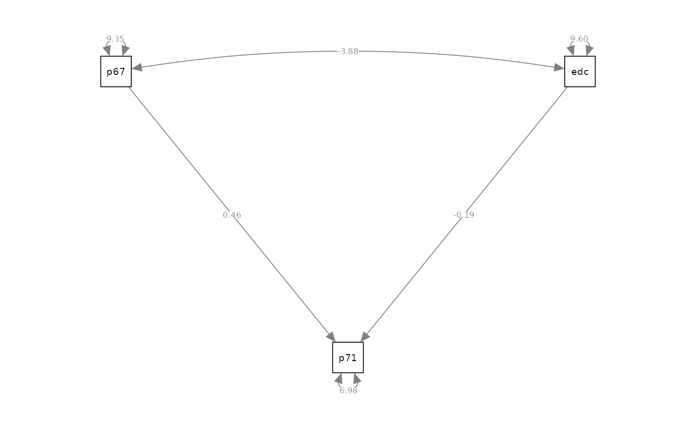
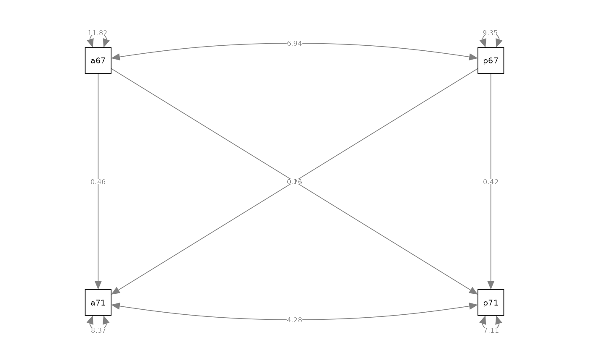
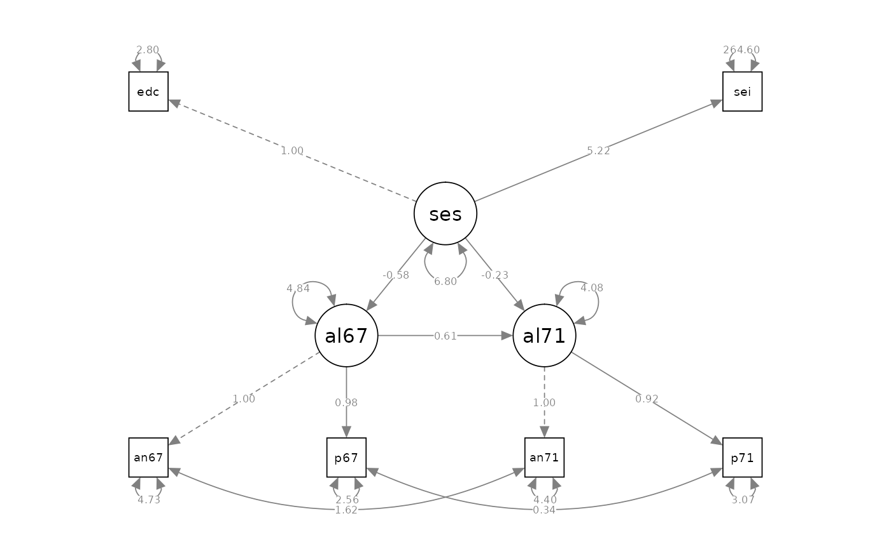

vignettes/notes/notes_alienation.Rmd
notes_alienation.Rmddata( alienation, package = "jeksterslabRdatarepo" )
| anomia67 | powerless67 | anomia71 | powerless71 | education | sei | |
|---|---|---|---|---|---|---|
| anomia67 | 11.834 | 6.947 | 6.819 | 4.783 | -3.839 | -21.899 |
| powerless67 | 6.947 | 9.364 | 5.091 | 5.028 | -3.889 | -18.831 |
| anomia71 | 6.819 | 5.091 | 12.532 | 7.495 | -3.841 | -21.748 |
| powerless71 | 4.783 | 5.028 | 7.495 | 9.986 | -3.625 | -18.775 |
| education | -3.839 | -3.889 | -3.841 | -3.625 | 9.610 | 35.522 |
| sei | -21.899 | -18.831 | -21.748 | -18.775 | 35.522 | 450.288 |
# model specification model_cov <- " # covariances # col 1 anomia67 ~~ anomia67 anomia71 ~~ anomia67 powerless67 ~~ anomia67 powerless71 ~~ anomia67 education ~~ anomia67 sei ~~ anomia67 # col 2 anomia71 ~~ anomia71 powerless67 ~~ anomia71 powerless71 ~~ anomia71 education ~~ anomia71 sei ~~ anomia71 # col 3 powerless67 ~~ powerless67 powerless71 ~~ powerless67 education ~~ powerless67 sei ~~ powerless67 # col 4 powerless71 ~~ powerless71 education ~~ powerless71 sei ~~ powerless71 # col 5 education ~~ education sei ~~ education # col 6 sei ~~ sei " # model fitting fit_cov <- sem( model_cov, sample.cov = alienation, sample.nobs = 932 ) # results summary(fit_cov, fit.measures = TRUE, standardized = TRUE) #> lavaan 0.6-6 ended normally after 146 iterations #> #> Estimator ML #> Optimization method NLMINB #> Number of free parameters 21 #> #> Number of observations 932 #> #> Model Test User Model: #> #> Test statistic 0.000 #> Degrees of freedom 0 #> #> Model Test Baseline Model: #> #> Test statistic 2133.722 #> Degrees of freedom 15 #> P-value 0.000 #> #> User Model versus Baseline Model: #> #> Comparative Fit Index (CFI) 1.000 #> Tucker-Lewis Index (TLI) 1.000 #> #> Loglikelihood and Information Criteria: #> #> Loglikelihood user model (H0) -15210.906 #> Loglikelihood unrestricted model (H1) -15210.906 #> #> Akaike (AIC) 30463.813 #> Bayesian (BIC) 30565.397 #> Sample-size adjusted Bayesian (BIC) 30498.703 #> #> Root Mean Square Error of Approximation: #> #> RMSEA 0.000 #> 90 Percent confidence interval - lower 0.000 #> 90 Percent confidence interval - upper 0.000 #> P-value RMSEA <= 0.05 NA #> #> Standardized Root Mean Square Residual: #> #> SRMR 0.000 #> #> Parameter Estimates: #> #> Standard errors Standard #> Information Expected #> Information saturated (h1) model Structured #> #> Covariances: #> Estimate Std.Err z-value P(>|z|) Std.lv Std.all #> anomia67 ~~ #> anomia71 6.812 0.457 14.915 0.000 6.812 0.560 #> powerless67 6.940 0.413 16.815 0.000 6.940 0.660 #> powerless71 4.778 0.389 12.295 0.000 4.778 0.440 #> education -3.835 0.371 -10.340 0.000 -3.835 -0.360 #> sei -21.876 2.494 -8.772 0.000 -21.876 -0.300 #> anomia71 ~~ #> powerless67 5.086 0.392 12.985 0.000 5.086 0.470 #> powerless71 7.487 0.441 16.992 0.000 7.487 0.670 #> education -3.837 0.380 -10.085 0.000 -3.837 -0.350 #> sei -21.725 2.559 -8.490 0.000 -21.725 -0.290 #> powerless67 ~~ #> powerless71 5.023 0.357 14.084 0.000 5.023 0.520 #> education -3.885 0.335 -11.580 0.000 -3.885 -0.410 #> sei -18.811 2.212 -8.503 0.000 -18.811 -0.290 #> powerless71 ~~ #> education -3.621 0.342 -10.595 0.000 -3.621 -0.370 #> sei -18.755 2.279 -8.231 0.000 -18.755 -0.280 #> education ~~ #> sei 35.484 2.446 14.506 0.000 35.484 0.540 #> #> Variances: #> Estimate Std.Err z-value P(>|z|) Std.lv Std.all #> anomia67 11.821 0.548 21.587 0.000 11.821 1.000 #> anomia71 12.519 0.580 21.587 0.000 12.519 1.000 #> powerless67 9.354 0.433 21.587 0.000 9.354 1.000 #> powerless71 9.975 0.462 21.587 0.000 9.975 1.000 #> education 9.600 0.445 21.587 0.000 9.600 1.000 #> sei 449.805 20.837 21.587 0.000 449.805 1.000 semPaths(fit_cov, what = "path", whatLabels = "est", style = "ram", layout = "circle")
# model specification model_regression <- " # regression powerless71 ~ powerless67 + education #------------------------------------------------------- # The syntax above is sufficient to specify this model. # The syntax below is added to be more explicit # about the parameters being estimated. #------------------------------------------------------- # variances of regressors powerless67 ~~ powerless67 education ~~ education # covariance of regressors powerless67 ~~ education # residual variance powerless71 ~~ powerless71 " # model fitting fit_regression <- sem( model_regression, sample.cov = alienation, sample.nobs = 932 ) # results summary(fit_regression, fit.measures = TRUE, standardized = TRUE) #> lavaan 0.6-6 ended normally after 21 iterations #> #> Estimator ML #> Optimization method NLMINB #> Number of free parameters 6 #> #> Number of observations 932 #> #> Model Test User Model: #> #> Test statistic 0.000 #> Degrees of freedom 0 #> #> Model Test Baseline Model: #> #> Test statistic 503.835 #> Degrees of freedom 3 #> P-value 0.000 #> #> User Model versus Baseline Model: #> #> Comparative Fit Index (CFI) 1.000 #> Tucker-Lewis Index (TLI) 1.000 #> #> Loglikelihood and Information Criteria: #> #> Loglikelihood user model (H0) -6883.135 #> Loglikelihood unrestricted model (H1) -6883.135 #> #> Akaike (AIC) 13778.270 #> Bayesian (BIC) 13807.294 #> Sample-size adjusted Bayesian (BIC) 13788.238 #> #> Root Mean Square Error of Approximation: #> #> RMSEA 0.000 #> 90 Percent confidence interval - lower 0.000 #> 90 Percent confidence interval - upper 0.000 #> P-value RMSEA <= 0.05 NA #> #> Standardized Root Mean Square Residual: #> #> SRMR 0.000 #> #> Parameter Estimates: #> #> Standard errors Standard #> Information Expected #> Information saturated (h1) model Structured #> #> Regressions: #> Estimate Std.Err z-value P(>|z|) Std.lv Std.all #> powerless71 ~ #> powerless67 0.457 0.031 14.731 0.000 0.457 0.443 #> education -0.192 0.031 -6.276 0.000 -0.192 -0.189 #> #> Covariances: #> Estimate Std.Err z-value P(>|z|) Std.lv Std.all #> powerless67 ~~ #> education -3.885 0.335 -11.580 0.000 -3.885 -0.410 #> #> Variances: #> Estimate Std.Err z-value P(>|z|) Std.lv Std.all #> powerless67 9.354 0.433 21.587 0.000 9.354 1.000 #> education 9.600 0.445 21.587 0.000 9.600 1.000 #> .powerless71 6.983 0.323 21.587 0.000 6.983 0.700 semPaths(fit_regression, what = "path", whatLabels = "est", style = "ram")

# model specification model_path <- " # regression anomia71 ~ anomia67 + powerless67 powerless71 ~ anomia67 + powerless67 #------------------------------------------------------- # The syntax above is sufficient to specify this model. # The syntax below is added to be more explicit # about the parameters being estimated. #------------------------------------------------------- # variances of regressors anomia67 ~~ anomia67 powerless67 ~~ powerless67 # covariance of regressors anomia67 ~~ powerless67 # residual variances anomia71 ~~ anomia71 powerless71 ~~ powerless71 " # model fitting fit_path <- sem( model_path, sample.cov = alienation, sample.nobs = 932 ) # results summary(fit_path, fit.measures = TRUE, standardized = TRUE) #> lavaan 0.6-6 ended normally after 36 iterations #> #> Estimator ML #> Optimization method NLMINB #> Number of free parameters 10 #> #> Number of observations 932 #> #> Model Test User Model: #> #> Test statistic 0.000 #> Degrees of freedom 0 #> #> Model Test Baseline Model: #> #> Test statistic 1565.624 #> Degrees of freedom 6 #> P-value 0.000 #> #> User Model versus Baseline Model: #> #> Comparative Fit Index (CFI) 1.000 #> Tucker-Lewis Index (TLI) 1.000 #> #> Loglikelihood and Information Criteria: #> #> Loglikelihood user model (H0) -8949.380 #> Loglikelihood unrestricted model (H1) -8949.380 #> #> Akaike (AIC) 17918.761 #> Bayesian (BIC) 17967.134 #> Sample-size adjusted Bayesian (BIC) 17935.375 #> #> Root Mean Square Error of Approximation: #> #> RMSEA 0.000 #> 90 Percent confidence interval - lower 0.000 #> 90 Percent confidence interval - upper 0.000 #> P-value RMSEA <= 0.05 NA #> #> Standardized Root Mean Square Residual: #> #> SRMR 0.000 #> #> Parameter Estimates: #> #> Standard errors Standard #> Information Expected #> Information saturated (h1) model Structured #> #> Regressions: #> Estimate Std.Err z-value P(>|z|) Std.lv Std.all #> anomia71 ~ #> anomia67 0.455 0.037 12.413 0.000 0.455 0.443 #> powerless67 0.206 0.041 4.991 0.000 0.206 0.178 #> powerless71 ~ #> anomia67 0.158 0.034 4.660 0.000 0.158 0.172 #> powerless67 0.420 0.038 11.048 0.000 0.420 0.407 #> #> Covariances: #> Estimate Std.Err z-value P(>|z|) Std.lv Std.all #> anomia67 ~~ #> powerless67 6.940 0.413 16.815 0.000 6.940 0.660 #> .anomia71 ~~ #> .powerless71 4.277 0.289 14.802 0.000 4.277 0.554 #> #> Variances: #> Estimate Std.Err z-value P(>|z|) Std.lv Std.all #> anomia67 11.821 0.548 21.587 0.000 11.821 1.000 #> powerless67 9.354 0.433 21.587 0.000 9.354 1.000 #> .anomia71 8.370 0.388 21.587 0.000 8.370 0.669 #> .powerless71 7.113 0.329 21.587 0.000 7.113 0.713 semPaths(object = fit_path, what = "path", whatLabels = "est", style = "ram")

# model specification model_cfa_1 <- " # measurement model alienation =~ 1 * anomia67 + powerless67 #------------------------------------------------------- # The syntax above is sufficient to specify this model. # The syntax below is added to be more explicit # about the parameters being estimated. #------------------------------------------------------- # residual variances anomia67 ~~ anomia67 powerless67 ~~ powerless67 alienation ~~ alienation " # model fitting fit_cfa_1 <- sem( model_cfa_1, sample.cov = alienation, sample.nobs = 932 ) #> Warning in lav_model_vcov(lavmodel = lavmodel, lavsamplestats = lavsamplestats, : lavaan WARNING: #> Could not compute standard errors! The information matrix could #> not be inverted. This may be a symptom that the model is not #> identified. #> Warning in lav_object_post_check(object): lavaan WARNING: some estimated ov #> variances are negative # results summary(fit_cfa_1, fit.measures = TRUE, standardized = TRUE) #> lavaan 0.6-6 ended normally after 23 iterations #> #> Estimator ML #> Optimization method NLMINB #> Number of free parameters 4 #> #> Number of observations 932 #> #> Model Test User Model: #> #> Test statistic NA #> Degrees of freedom -1 #> P-value (Unknown) NA #> #> User Model versus Baseline Model: #> #> Comparative Fit Index (CFI) NA #> Tucker-Lewis Index (TLI) NA #> #> Loglikelihood and Information Criteria: #> #> Loglikelihood user model (H0) -4571.282 #> Loglikelihood unrestricted model (H1) -4571.282 #> #> Akaike (AIC) 9150.564 #> Bayesian (BIC) 9169.913 #> Sample-size adjusted Bayesian (BIC) 9157.209 #> #> Root Mean Square Error of Approximation: #> #> RMSEA NA #> 90 Percent confidence interval - lower NA #> 90 Percent confidence interval - upper NA #> P-value RMSEA <= 0.05 NA #> #> Standardized Root Mean Square Residual: #> #> SRMR 0.000 #> #> Parameter Estimates: #> #> Standard errors Standard #> Information Expected #> Information saturated (h1) model Structured #> #> Latent Variables: #> Estimate Std.Err z-value P(>|z|) Std.lv Std.all #> alienation =~ #> anomia67 1.000 1.905 0.554 #> powerless67 1.912 NA 3.643 1.191 #> #> Variances: #> Estimate Std.Err z-value P(>|z|) Std.lv Std.all #> .anomia67 8.193 NA 8.193 0.693 #> .powerless67 -3.917 NA -3.917 -0.419 #> alienation 3.629 NA 1.000 1.000 semPaths(fit_cfa_1, what = "path", whatLabels = "est", style = "ram")
# model specification model_cfa_2 <- " # measurement model alienation =~ 1 * anomia67 + powerless67 + anomia71 + powerless71 #------------------------------------------------------- # The syntax above is sufficient to specify this model. # The syntax below is added to be more explicit # about the parameters being estimated. #------------------------------------------------------- # residual variances anomia67 ~~ anomia67 powerless67 ~~ powerless67 anomia71 ~~ anomia71 powerless71 ~~ powerless71 alienation ~~ alienation " # model fitting fit_cfa_2 <- sem( model_cfa_2, sample.cov = alienation, sample.nobs = 932 ) # results summary(fit_cfa_2, fit.measures = TRUE, standardized = TRUE) #> lavaan 0.6-6 ended normally after 30 iterations #> #> Estimator ML #> Optimization method NLMINB #> Number of free parameters 8 #> #> Number of observations 932 #> #> Model Test User Model: #> #> Test statistic 220.877 #> Degrees of freedom 2 #> P-value (Chi-square) 0.000 #> #> Model Test Baseline Model: #> #> Test statistic 1565.624 #> Degrees of freedom 6 #> P-value 0.000 #> #> User Model versus Baseline Model: #> #> Comparative Fit Index (CFI) 0.860 #> Tucker-Lewis Index (TLI) 0.579 #> #> Loglikelihood and Information Criteria: #> #> Loglikelihood user model (H0) -9059.819 #> Loglikelihood unrestricted model (H1) -8949.380 #> #> Akaike (AIC) 18135.638 #> Bayesian (BIC) 18174.336 #> Sample-size adjusted Bayesian (BIC) 18148.929 #> #> Root Mean Square Error of Approximation: #> #> RMSEA 0.343 #> 90 Percent confidence interval - lower 0.305 #> 90 Percent confidence interval - upper 0.382 #> P-value RMSEA <= 0.05 0.000 #> #> Standardized Root Mean Square Residual: #> #> SRMR 0.067 #> #> Parameter Estimates: #> #> Standard errors Standard #> Information Expected #> Information saturated (h1) model Structured #> #> Latent Variables: #> Estimate Std.Err z-value P(>|z|) Std.lv Std.all #> alienation =~ #> anomia67 1.000 2.537 0.738 #> powerless67 0.874 0.044 19.779 0.000 2.218 0.725 #> anomia71 1.080 0.052 20.806 0.000 2.741 0.775 #> powerless71 0.918 0.046 20.053 0.000 2.329 0.737 #> #> Variances: #> Estimate Std.Err z-value P(>|z|) Std.lv Std.all #> .anomia67 5.384 0.333 16.180 0.000 5.384 0.455 #> .powerless67 4.433 0.267 16.580 0.000 4.433 0.474 #> .anomia71 5.006 0.339 14.774 0.000 5.006 0.400 #> .powerless71 4.552 0.281 16.199 0.000 4.552 0.456 #> alienation 6.437 0.535 12.032 0.000 1.000 1.000 semPaths(fit_cfa_2, what = "path", whatLabels = "est", style = "ram")
# model specification model_cfa_3 <- " # measurement model alienation67 =~ 1 * anomia67 + powerless67 alienation71 =~ 1 * anomia71 + powerless71 #------------------------------------------------------- # The syntax above is sufficient to specify this model. # The syntax below is added to be more explicit # about the parameters being estimated. #------------------------------------------------------- # covariance of factors alienation67 ~~ alienation71 # variances of factors alienation67 ~~ alienation67 alienation71 ~~ alienation71 # residual variances anomia67 ~~ anomia67 powerless67 ~~ powerless67 anomia71 ~~ anomia71 powerless71 ~~ powerless71 " # model fitting fit_cfa_3 <- sem( model_cfa_3, sample.cov = alienation, sample.nobs = 932 ) # results summary(fit_cfa_3, fit.measures = TRUE, standardized = TRUE) #> lavaan 0.6-6 ended normally after 48 iterations #> #> Estimator ML #> Optimization method NLMINB #> Number of free parameters 9 #> #> Number of observations 932 #> #> Model Test User Model: #> #> Test statistic 61.173 #> Degrees of freedom 1 #> P-value (Chi-square) 0.000 #> #> Model Test Baseline Model: #> #> Test statistic 1565.624 #> Degrees of freedom 6 #> P-value 0.000 #> #> User Model versus Baseline Model: #> #> Comparative Fit Index (CFI) 0.961 #> Tucker-Lewis Index (TLI) 0.769 #> #> Loglikelihood and Information Criteria: #> #> Loglikelihood user model (H0) -8979.967 #> Loglikelihood unrestricted model (H1) -8949.380 #> #> Akaike (AIC) 17977.933 #> Bayesian (BIC) 18021.469 #> Sample-size adjusted Bayesian (BIC) 17992.886 #> #> Root Mean Square Error of Approximation: #> #> RMSEA 0.254 #> 90 Percent confidence interval - lower 0.202 #> 90 Percent confidence interval - upper 0.310 #> P-value RMSEA <= 0.05 0.000 #> #> Standardized Root Mean Square Residual: #> #> SRMR 0.027 #> #> Parameter Estimates: #> #> Standard errors Standard #> Information Expected #> Information saturated (h1) model Structured #> #> Latent Variables: #> Estimate Std.Err z-value P(>|z|) Std.lv Std.all #> alienation67 =~ #> anomia67 1.000 2.862 0.832 #> powerless67 0.847 0.042 20.169 0.000 2.425 0.793 #> alienation71 =~ #> anomia71 1.000 3.030 0.856 #> powerless71 0.815 0.040 20.354 0.000 2.471 0.782 #> #> Covariances: #> Estimate Std.Err z-value P(>|z|) Std.lv Std.all #> alienation67 ~~ #> alienation71 6.465 0.449 14.399 0.000 0.745 0.745 #> #> Variances: #> Estimate Std.Err z-value P(>|z|) Std.lv Std.all #> alienation67 8.192 0.617 13.272 0.000 1.000 1.000 #> alienation71 9.183 0.668 13.742 0.000 1.000 1.000 #> .anomia67 3.629 0.371 9.784 0.000 3.629 0.307 #> .powerless67 3.475 0.287 12.119 0.000 3.475 0.372 #> .anomia71 3.335 0.398 8.390 0.000 3.335 0.266 #> .powerless71 3.871 0.302 12.803 0.000 3.871 0.388 semPaths(fit_cfa_3, what = "path", whatLabels = "est", style = "ram")
# model specification model_cfa_4 <- " # measurement model alienation67 =~ NA * anomia67 + powerless67 alienation71 =~ NA * anomia71 + powerless71 # variances of factors alienation67 ~~ 1 * alienation67 alienation71 ~~ 1 * alienation71 #------------------------------------------------------- # The syntax above is sufficient to specify this model. # The syntax below is added to be more explicit # about the parameters being estimated. #------------------------------------------------------- # covariance of factors alienation67 ~~ alienation71 # measurement error variances anomia67 ~~ anomia67 powerless67 ~~ powerless67 anomia71 ~~ anomia71 powerless71 ~~ powerless71 " # model fitting fit_cfa_4 <- sem( model_cfa_4, sample.cov = alienation, sample.nobs = 932 ) # results summary(fit_cfa_4, fit.measures = TRUE, standardized = TRUE) #> lavaan 0.6-6 ended normally after 19 iterations #> #> Estimator ML #> Optimization method NLMINB #> Number of free parameters 9 #> #> Number of observations 932 #> #> Model Test User Model: #> #> Test statistic 61.173 #> Degrees of freedom 1 #> P-value (Chi-square) 0.000 #> #> Model Test Baseline Model: #> #> Test statistic 1565.624 #> Degrees of freedom 6 #> P-value 0.000 #> #> User Model versus Baseline Model: #> #> Comparative Fit Index (CFI) 0.961 #> Tucker-Lewis Index (TLI) 0.769 #> #> Loglikelihood and Information Criteria: #> #> Loglikelihood user model (H0) -8979.967 #> Loglikelihood unrestricted model (H1) -8949.380 #> #> Akaike (AIC) 17977.933 #> Bayesian (BIC) 18021.469 #> Sample-size adjusted Bayesian (BIC) 17992.886 #> #> Root Mean Square Error of Approximation: #> #> RMSEA 0.254 #> 90 Percent confidence interval - lower 0.202 #> 90 Percent confidence interval - upper 0.310 #> P-value RMSEA <= 0.05 0.000 #> #> Standardized Root Mean Square Residual: #> #> SRMR 0.027 #> #> Parameter Estimates: #> #> Standard errors Standard #> Information Expected #> Information saturated (h1) model Structured #> #> Latent Variables: #> Estimate Std.Err z-value P(>|z|) Std.lv Std.all #> alienation67 =~ #> anomia67 2.862 0.108 26.544 0.000 2.862 0.832 #> powerless67 2.425 0.096 25.172 0.000 2.425 0.793 #> alienation71 =~ #> anomia71 3.030 0.110 27.484 0.000 3.030 0.856 #> powerless71 2.471 0.099 24.886 0.000 2.471 0.782 #> #> Covariances: #> Estimate Std.Err z-value P(>|z|) Std.lv Std.all #> alienation67 ~~ #> alienation71 0.745 0.024 30.522 0.000 0.745 0.745 #> #> Variances: #> Estimate Std.Err z-value P(>|z|) Std.lv Std.all #> alienation67 1.000 1.000 1.000 #> alienation71 1.000 1.000 1.000 #> .anomia67 3.629 0.371 9.784 0.000 3.629 0.307 #> .powerless67 3.475 0.287 12.119 0.000 3.475 0.372 #> .anomia71 3.335 0.398 8.390 0.000 3.335 0.266 #> .powerless71 3.871 0.302 12.803 0.000 3.871 0.388 semPaths(fit_cfa_4, what = "path", whatLabels = "est", style = "ram")
# model specification model_cfa_6 <- " # measurement model alienation67 =~ 1 * anomia67 + powerless67 alienation71 =~ 1 * anomia71 + powerless71 ses =~ 1 * education + sei # measurement error covariances anomia67 ~~ anomia71 powerless67 ~~ powerless71 # regression alienation71 ~ alienation67 + ses alienation67 ~ ses #------------------------------------------------------- # The syntax above is sufficient to specify this model. # The syntax below is added to be more explicit # about the parameters being estimated. #------------------------------------------------------- # variances of factors ses ~~ ses # residual variances of factors alienation67 ~~ alienation67 alienation71 ~~ alienation71 # measurement error variances anomia67 ~~ anomia67 powerless67 ~~ powerless67 anomia71 ~~ anomia71 powerless71 ~~ powerless71 " # model fitting fit_cfa_6 <- sem( model_cfa_6, sample.cov = alienation, sample.nobs = 932 ) # results summary(fit_cfa_6, fit.measures = TRUE, standardized = TRUE) #> lavaan 0.6-6 ended normally after 84 iterations #> #> Estimator ML #> Optimization method NLMINB #> Number of free parameters 17 #> #> Number of observations 932 #> #> Model Test User Model: #> #> Test statistic 4.735 #> Degrees of freedom 4 #> P-value (Chi-square) 0.316 #> #> Model Test Baseline Model: #> #> Test statistic 2133.722 #> Degrees of freedom 15 #> P-value 0.000 #> #> User Model versus Baseline Model: #> #> Comparative Fit Index (CFI) 1.000 #> Tucker-Lewis Index (TLI) 0.999 #> #> Loglikelihood and Information Criteria: #> #> Loglikelihood user model (H0) -15213.274 #> Loglikelihood unrestricted model (H1) -15210.906 #> #> Akaike (AIC) 30460.548 #> Bayesian (BIC) 30542.783 #> Sample-size adjusted Bayesian (BIC) 30488.792 #> #> Root Mean Square Error of Approximation: #> #> RMSEA 0.014 #> 90 Percent confidence interval - lower 0.000 #> 90 Percent confidence interval - upper 0.053 #> P-value RMSEA <= 0.05 0.930 #> #> Standardized Root Mean Square Residual: #> #> SRMR 0.007 #> #> Parameter Estimates: #> #> Standard errors Standard #> Information Expected #> Information saturated (h1) model Structured #> #> Latent Variables: #> Estimate Std.Err z-value P(>|z|) Std.lv Std.all #> alienation67 =~ #> anomia67 1.000 2.663 0.774 #> powerless67 0.979 0.062 15.895 0.000 2.606 0.852 #> alienation71 =~ #> anomia71 1.000 2.850 0.805 #> powerless71 0.922 0.059 15.498 0.000 2.628 0.832 #> ses =~ #> education 1.000 2.607 0.842 #> sei 5.219 0.422 12.364 0.000 13.609 0.642 #> #> Regressions: #> Estimate Std.Err z-value P(>|z|) Std.lv Std.all #> alienation71 ~ #> alienation67 0.607 0.051 11.898 0.000 0.567 0.567 #> ses -0.227 0.052 -4.334 0.000 -0.207 -0.207 #> alienation67 ~ #> ses -0.575 0.056 -10.195 0.000 -0.563 -0.563 #> #> Covariances: #> Estimate Std.Err z-value P(>|z|) Std.lv Std.all #> .anomia67 ~~ #> .anomia71 1.623 0.314 5.176 0.000 1.623 0.356 #> .powerless67 ~~ #> .powerless71 0.339 0.261 1.298 0.194 0.339 0.121 #> #> Variances: #> Estimate Std.Err z-value P(>|z|) Std.lv Std.all #> ses 6.798 0.649 10.475 0.000 1.000 1.000 #> .alienation67 4.841 0.467 10.359 0.000 0.683 0.683 #> .alienation71 4.083 0.404 10.104 0.000 0.503 0.503 #> .anomia67 4.731 0.453 10.441 0.000 4.731 0.400 #> .powerless67 2.563 0.403 6.359 0.000 2.563 0.274 #> .anomia71 4.399 0.515 8.542 0.000 4.399 0.351 #> .powerless71 3.070 0.434 7.070 0.000 3.070 0.308 #> .education 2.801 0.507 5.525 0.000 2.801 0.292 #> .sei 264.597 18.126 14.597 0.000 264.597 0.588 semPaths(fit_cfa_6, what = "path", whatLabels = "est", style = "ram")

# model specification model_cfa_7 <- " # measurement model alienation67 =~ 1 * anomia67 + powerless67 alienation71 =~ 1 * anomia71 + powerless71 alienation =~ a * alienation67 + a * alienation71 # measurement error covariances anomia67 ~~ anomia71 powerless67 ~~ powerless71 #------------------------------------------------------- # The syntax above is sufficient to specify this model. # The syntax below is added to be more explicit # about the parameters being estimated. #------------------------------------------------------- # variance of second-order factor alienation ~~ alienation # residual variances of factors alienation67 ~~ alienation67 alienation71 ~~ alienation71 " # model fitting fit_cfa_7 <- sem( model_cfa_7, sample.cov = alienation, sample.nobs = 932 ) #> Warning in lav_model_vcov(lavmodel = lavmodel, lavsamplestats = lavsamplestats, : lavaan WARNING: #> Could not compute standard errors! The information matrix could #> not be inverted. This may be a symptom that the model is not #> identified. # results summary(fit_cfa_7, fit.measures = TRUE, standardized = TRUE) #> lavaan 0.6-6 ended normally after 48 iterations #> #> Estimator ML #> Optimization method NLMINB #> Number of free parameters 11 #> #> Number of observations 932 #> #> Model Test User Model: #> #> Test statistic NA #> Degrees of freedom -1 #> P-value (Unknown) NA #> #> User Model versus Baseline Model: #> #> Comparative Fit Index (CFI) NA #> Tucker-Lewis Index (TLI) NA #> #> Loglikelihood and Information Criteria: #> #> Loglikelihood user model (H0) -8949.380 #> Loglikelihood unrestricted model (H1) -8949.380 #> #> Akaike (AIC) 17920.761 #> Bayesian (BIC) 17973.971 #> Sample-size adjusted Bayesian (BIC) 17939.036 #> #> Root Mean Square Error of Approximation: #> #> RMSEA NA #> 90 Percent confidence interval - lower NA #> 90 Percent confidence interval - upper NA #> P-value RMSEA <= 0.05 NA #> #> Standardized Root Mean Square Residual: #> #> SRMR 0.000 #> #> Parameter Estimates: #> #> Standard errors Standard #> Information Expected #> Information saturated (h1) model Structured #> #> Latent Variables: #> Estimate Std.Err z-value P(>|z|) Std.lv Std.all #> alienation67 =~ #> anomia67 1.000 2.553 0.742 #> powerlss67 1.065 NA 2.719 0.889 #> alienation71 =~ #> anomia71 1.000 2.735 0.773 #> powerlss71 1.001 NA 2.737 0.867 #> alienation =~ #> alienatn67 (a) 1.000 0.856 0.856 #> alienatn71 (a) 1.000 0.799 0.799 #> #> Covariances: #> Estimate Std.Err z-value P(>|z|) Std.lv Std.all #> .anomia67 ~~ #> .anomia71 2.037 NA 2.037 0.394 #> .powerless67 ~~ #> .powerless71 -0.066 NA -0.066 -0.030 #> #> Variances: #> Estimate Std.Err z-value P(>|z|) Std.lv Std.all #> alienation 4.775 NA 1.000 1.000 #> .alienation67 1.741 NA 0.267 0.267 #> .alienation71 2.707 NA 0.362 0.362 #> .anomia67 5.305 NA 5.305 0.449 #> .powerless67 1.963 NA 1.963 0.210 #> .anomia71 5.036 NA 5.036 0.402 #> .powerless71 2.484 NA 2.484 0.249 semPaths(fit_cfa_7, what = "path", whatLabels = "est", style = "ram")